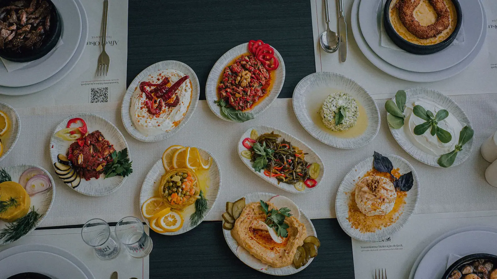
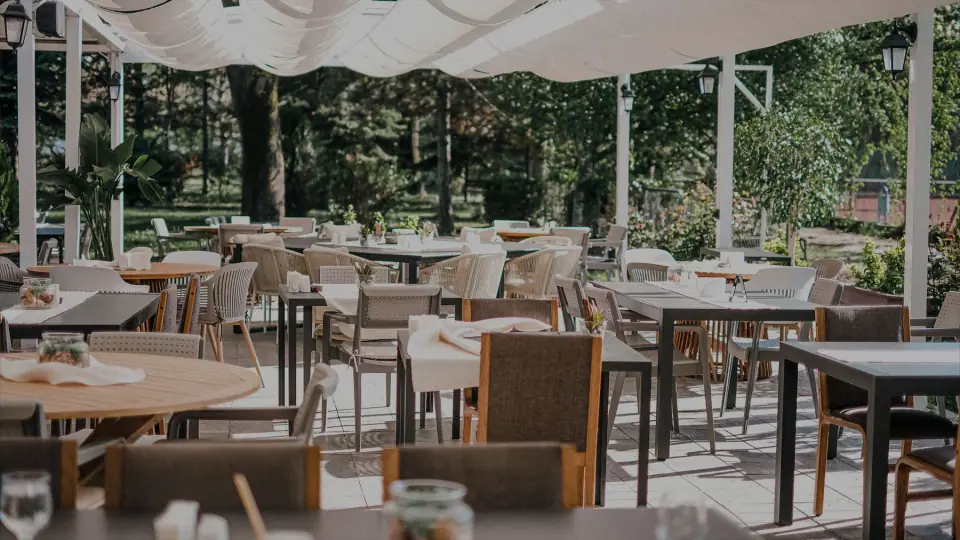
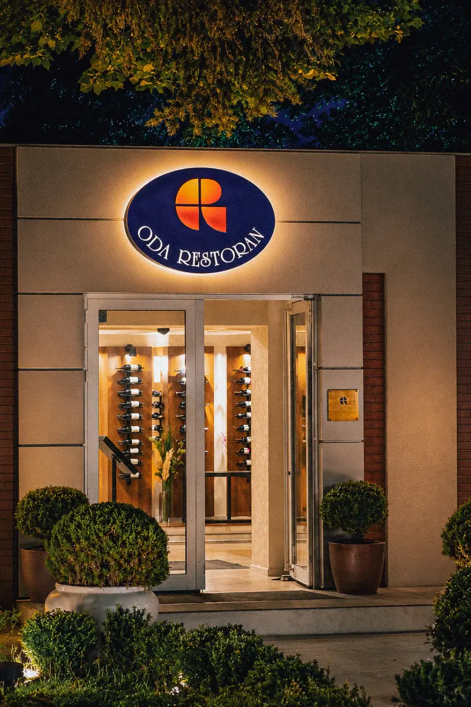

Otuz dört yıldır aynı özen ve samimiyetle
Misafirlerimizi kendi evimize gelmiş gibi ağırlıyor, iyi yemekleri ve güzel anları aynı masada buluşturuyoruz.
- Şimdi
- SaatlerPzt-Cum 09:00–22:00
Cmt ve Paz 09:00–21:00 - Adres75. Yıl O.S.B. Mh. İsmail Kanatlı Bul. No:1/3 Odunpazarı - ESKİŞEHİR
- Telefon0 (222) 236 00 47
Hikâyemiz
1992'de Durmuş Usta'nın emeğiyle başlayan hikâye bugün aynı samimiyetle sürüyor.
Eskişehir'de misafirlerimizi 34 yıldır aynı özenle ağırlıyoruz.

Odunpazarı
Eskişehir'de, Odunpazarı'nda
| Pazartesi | 09:00–22:00 |
|---|---|
| Salı | 09:00–22:00 |
| Çarşamba | 09:00–22:00 |
| Perşembe | 09:00–22:00 |
| Cuma | 09:00–22:00 |
| Cumartesi | 09:00–21:00 |
| Pazar | 09:00–21:00 |
- Rezervasyon için 0 (222) 236 00 47 numaralı telefondan bize ulaşabilirsiniz.
